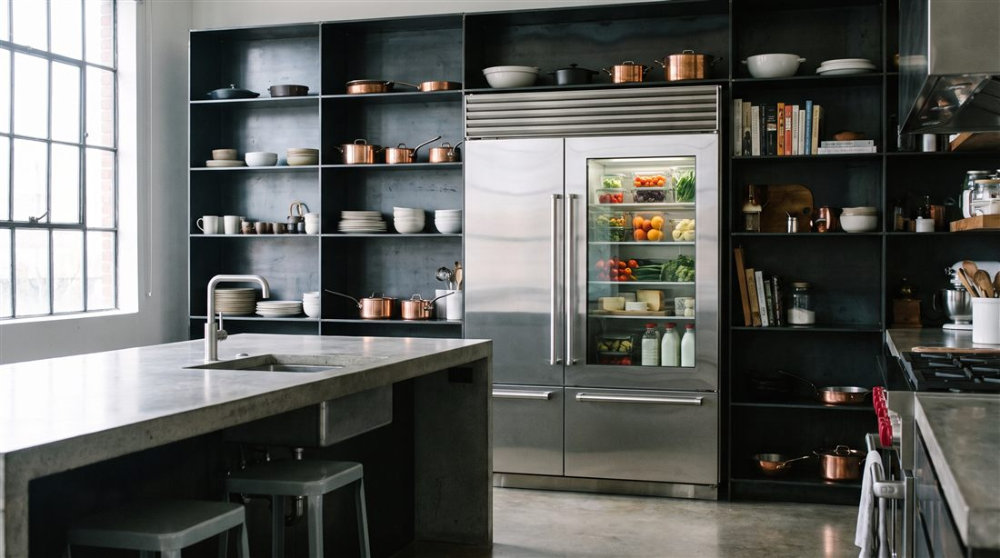

Sub-Zero
A warm Sub-Zero is an emergency. We treat it like one.

When a Sub-Zero drifts warm, it is almost never the whole machine. It is one link in the cold chain. A condenser choked with dust, an evaporator fan gone quiet, a tired compressor, or a sealed system leak slowly bleeding refrigerant.
The wrong response is a guess. The right response is a structured diagnostic that isolates which link failed, confirms it with gauge and thermometer readings, and fixes that. Nothing more, nothing less.
Dust and pet hair blanket the coil. The unit runs constantly, cools poorly, and ages fast.
Cold gets made but never moved. Sections drift warm while the compartment sounds normal.
Refrigerant escapes at a weld or joint. Cooling fades over weeks. Gauge testing confirms it.
Older compressors lose capacity a little at a time. We measure output before condemning one.
A sensor misreads temperature and the unit follows bad data. We read what the board reads.
Warm, moist air sneaks in around a hardened gasket and overwhelms the system on hot days.
Warm fridge calls jump the queue. In most of our service area we can be at your door the same day or next morning, seven days a week.
Not yet. Keep the doors closed. A loaded Sub-Zero holds safe temperature for hours. If we cannot restore cooling on the first visit, your tech will help you plan for the perishables.
Usually, yes. Sub-Zero builds these to run 20 years and more, and a properly repaired sealed system buys years of service for a fraction of replacement cost. Either way, we give you honest numbers and let you decide.
One call, and it is handled. Open daily, 7am to 7pm.
Same day slots are limited and go to the first callers. The diagnostic is credited toward your repair, so it costs you nothing to find out.